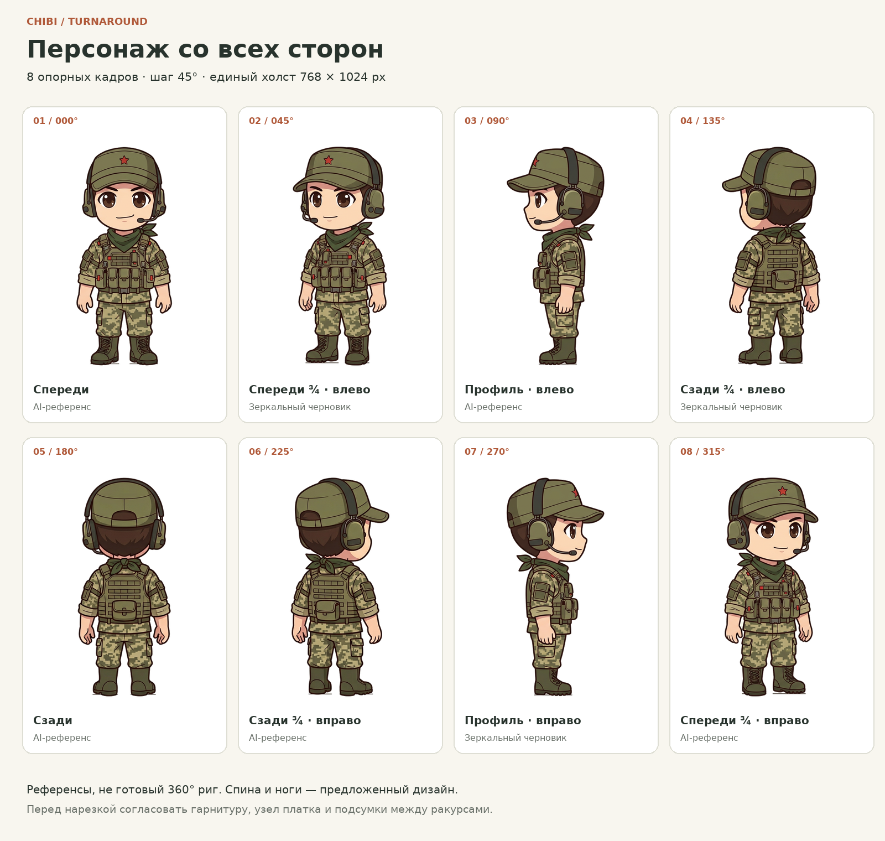
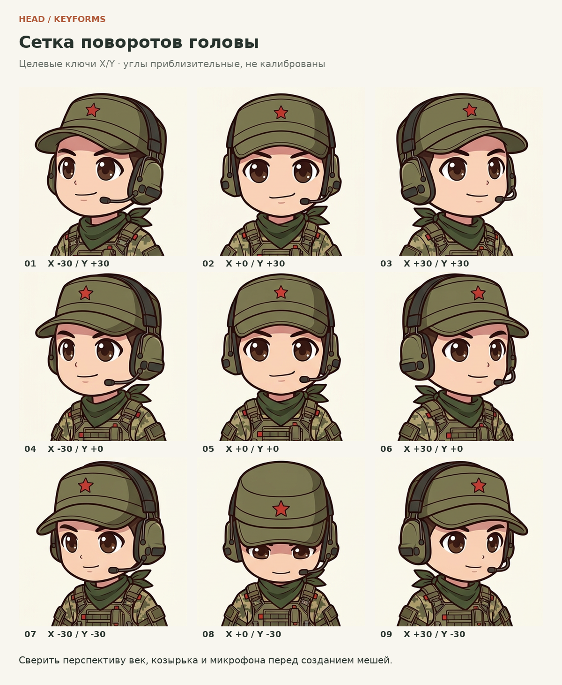

CHARACTER DESIGN / 01
Персонаж со всех сторон.
Единый набор ракурсов, чтобы следующий шаг в Live2D стал проще.
ORTHOGRAPHIC REFERENCE
768 × 1024

Загружаем референсы…
AI-референс
01 / 08
Ключевые ракурсы 8 кадров
Полный оборот · шаг 45°Основа для риггинга, не готовый риг. Кадры 45°, 135° и 270° — зеркальные черновики. Микрофон, платок и подсумки требуют согласования.
Подробнее ↗Лист ракурсов
PNG ↓

Ключи головы X / Y
PNG ↓

Всё для следующего этапа
Листы для печати, покадровая анимация и данные для вашего пайплайна.


PSD содержит целые кадры на отдельных слоях, а не нарезку частей тела. Углы головы — приблизительные целевые ключи. GIF показывает опорные кадры, без интерполяции.
ДАЛЕЕ
Импорт в Cubism Editor
Дорисуйте скрытые области, задайте меши и деформеры, затем ключи X/Y, моргание и рот. Для спины и профилей нужны собственные части и переключение видимости, а не растягивание фронта до 180°.
Полная инструкция по риггингу ↗